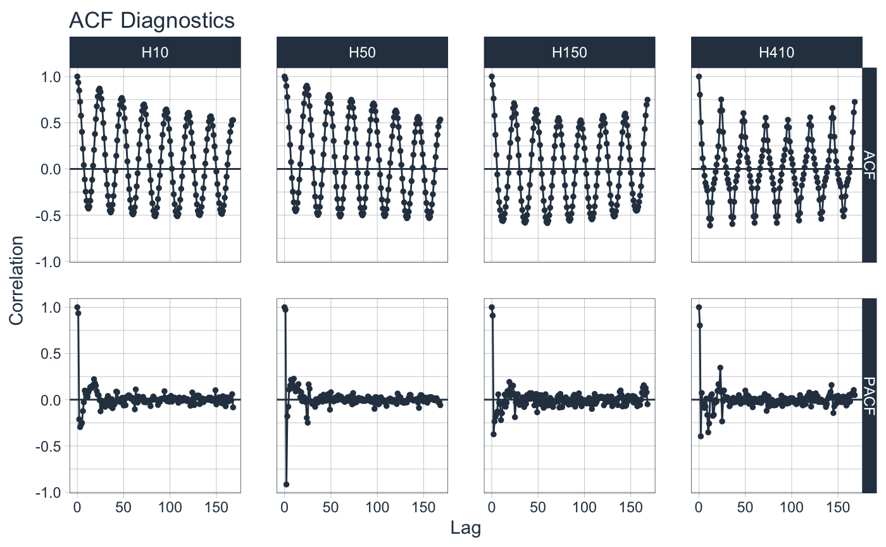
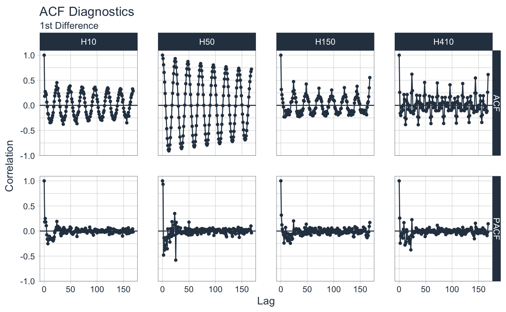
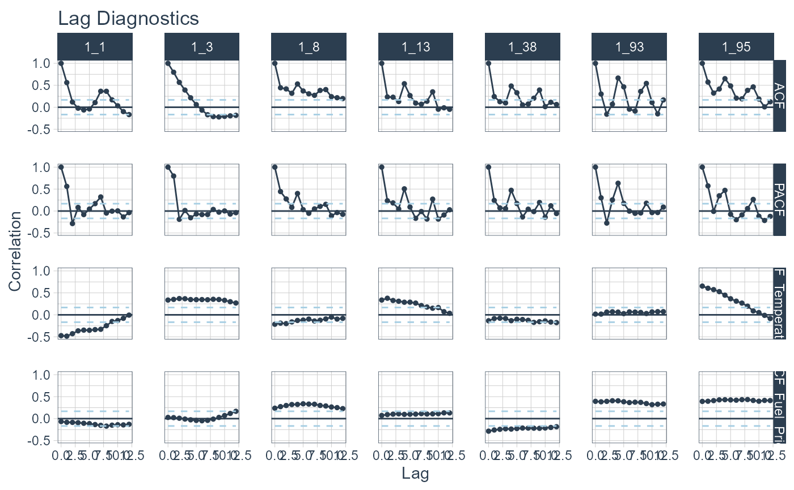

R/plot-acf_diagnostics.R
plot_acf_diagnostics.RdReturns the ACF and PACF of a target and
optionally CCF's of one or more lagged predictors in interactive plotly plots. Scales
to multiple time series with group_by().
plot_acf_diagnostics( .data, .date_var, .value, .ccf_vars = NULL, .lags = 1000, .show_ccf_vars_only = FALSE, .show_white_noise_bars = FALSE, .facet_ncol = 1, .facet_scales = "fixed", .line_color = "#2c3e50", .line_size = 0.5, .line_alpha = 1, .point_color = "#2c3e50", .point_size = 1, .point_alpha = 1, .x_intercept = NULL, .x_intercept_color = "#E31A1C", .hline_color = "#2c3e50", .white_noise_line_type = 2, .white_noise_line_color = "#A6CEE3", .title = "Lag Diagnostics", .x_lab = "Lag", .y_lab = "Correlation", .interactive = TRUE, .plotly_slider = FALSE )
| .data | A data frame or tibble with numeric features (values) in descending chronological order |
|---|---|
| .date_var | A column containing either date or date-time values |
| .value | A numeric column with a value to have ACF and PACF calculations performed. |
| .ccf_vars | Additional features to perform Lag Cross Correlations (CCFs)
versus the |
| .lags | A sequence of one or more lags to evaluate. |
| .show_ccf_vars_only | Hides the ACF and PACF plots so you can focus on only CCFs. |
| .show_white_noise_bars | Shows the white noise significance bounds. |
| .facet_ncol | Facets: Number of facet columns. Has no effect if using |
| .facet_scales | Facets: Options include "fixed", "free", "free_y", "free_x" |
| .line_color | Line color. Use keyword: "scale_color" to change the color by the facet. |
| .line_size | Line size |
| .line_alpha | Line opacity. Adjust the transparency of the line. Range: (0, 1) |
| .point_color | Point color. Use keyword: "scale_color" to change the color by the facet. |
| .point_size | Point size |
| .point_alpha | Opacity. Adjust the transparency of the points. Range: (0, 1) |
| .x_intercept | Numeric lag. Adds a vertical line. |
| .x_intercept_color | Color for the x-intercept line. |
| .hline_color | Color for the y-intercept = 0 line. |
| .white_noise_line_type | Line type for white noise bars. Set to 2 for "dashed" by default. |
| .white_noise_line_color | Line color for white noise bars.
Set to |
| .title | Title for the plot |
| .x_lab | X-axis label for the plot |
| .y_lab | Y-axis label for the plot |
| .interactive | Returns either a static ( |
| .plotly_slider | If TRUE, returns a plotly x-axis range slider. |
A static ggplot2 plot or an interactive plotly plot
Simplified ACF, PACF, & CCF
We are often interested in all 3 of these functions. Why not get all 3+ at once? Now you can.
ACF - Autocorrelation between a target variable and lagged versions of itself
PACF - Partial Autocorrelation removes the dependence of lags on other lags highlighting key seasonalities.
CCF - Shows how lagged predictors can be used for prediction of a target variable.
Lag Specification
Lags (.lags) can either be specified as:
A time-based phrase indicating a duraction (e.g. 2 months)
A maximum lag (e.g. .lags = 28)
A sequence of lags (e.g. .lags = 7:28)
Scales to Multiple Time Series with Groups
The plot_acf_diagnostics() works with grouped_df's, meaning you can
group your time series by one or more categorical columns with dplyr::group_by()
and then apply plot_acf_diagnostics() to return group-wise lag diagnostics.
Special Note on Groups
Unlike other plotting utilities, the .facet_vars arguments is NOT included.
Use dplyr::group_by() for processing multiple time series groups.
Calculating the White Noise Significance Bars
The formula for the significance bars is +2/sqrt(T) and -2/sqrt(T) where T is the length of the
time series. For a white noise time series, 95% of the data points should fall
within this range. Those that don't may be significant autocorrelations.
Visualizing ACF, PACF, & CCF: plot_acf_diagnostics()
Visualizing Seasonality: plot_seasonal_diagnostics()
Visualizing Time Series: plot_time_series()
library(tidyverse) library(timetk) # Apply Transformations # - Differencing transformation to identify ARIMA & SARIMA Orders m4_hourly %>% group_by(id) %>% plot_acf_diagnostics( date, value, # ACF & PACF .lags = "7 days", # 7-Days of hourly lags .interactive = FALSE )# Apply Transformations # - Differencing transformation to identify ARIMA & SARIMA Orders m4_hourly %>% group_by(id) %>% plot_acf_diagnostics( date, diff_vec(value, lag = 1), # Difference the value column .lags = 0:(24*7), # 7-Days of hourly lags .interactive = FALSE ) + ggtitle("ACF Diagnostics", subtitle = "1st Difference")#>#>#>#># CCFs Too! walmart_sales_weekly %>% select(id, Date, Weekly_Sales, Temperature, Fuel_Price) %>% group_by(id) %>% plot_acf_diagnostics( Date, Weekly_Sales, # ACF & PACF .ccf_vars = c(Temperature, Fuel_Price), # CCFs .lags = "3 months", # 3 months of weekly lags .interactive = FALSE )